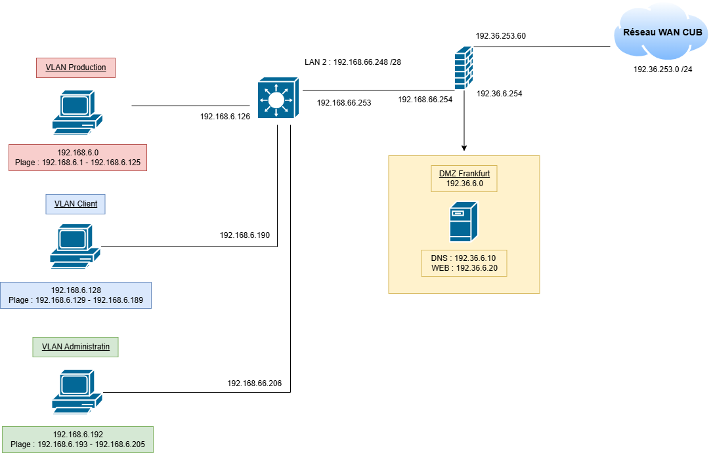
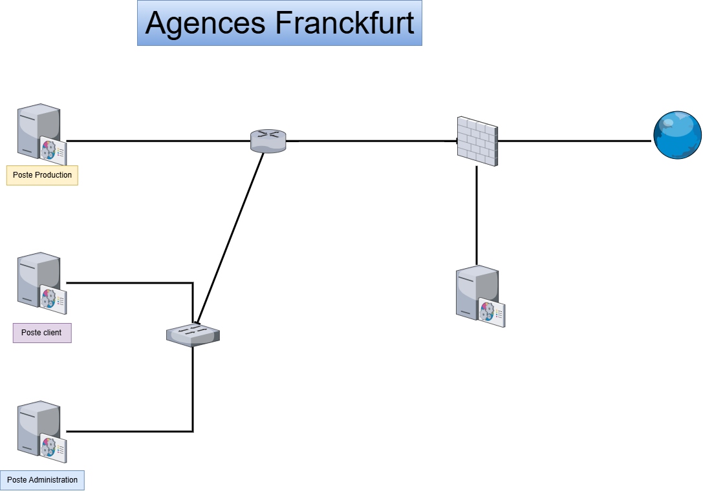
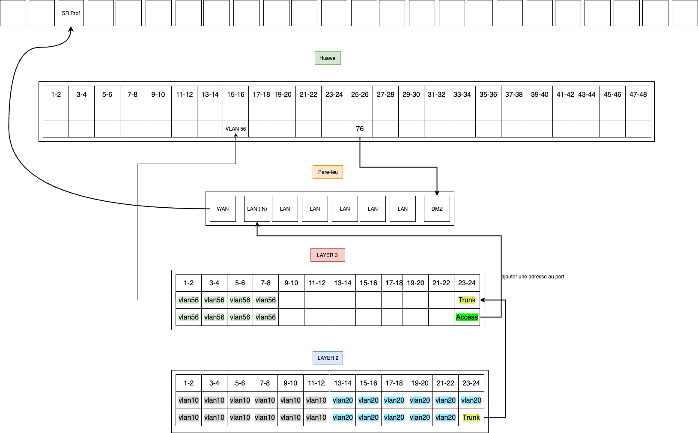
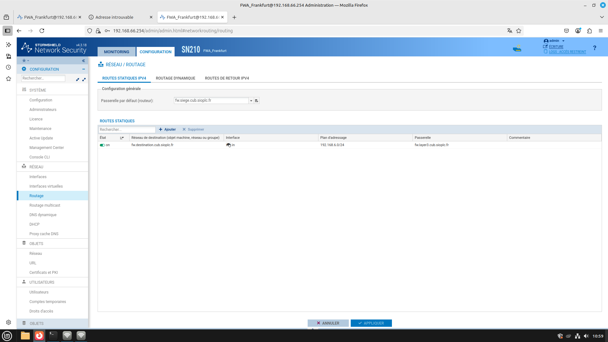
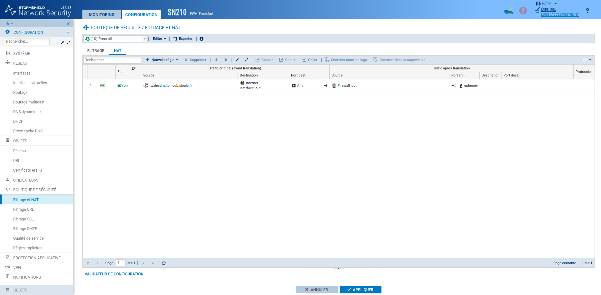
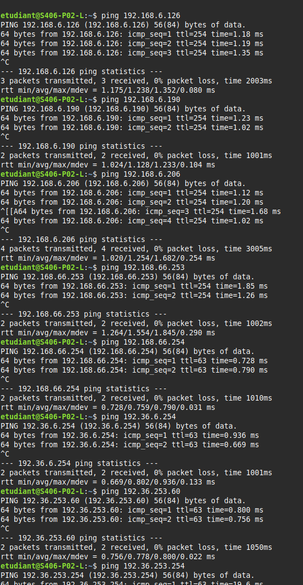
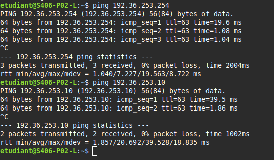

Situation0 - AdminInfra - CUB¶
Mise en place de l’infrastructure réseau des agences de l’entreprise CUB¶
Présenté par : Joris Texier
Date de rédaction : 03 septembre 2025
Version : 1
Sommaire¶
- I) Phase d’analyse et de maquettage
- Schéma logique
- Schéma physique
- Schéma de câblage
- Table de routage
- Table de NAT
- Maquette Packet Tracer : Configuration des switch et routeur CUB
- Mise en place du prototypage
- Pare-feu Stormshield
- Routage
- NAT
- Test
I) Phase d’analyse et de maquettage¶
- La présence d’un seul réseau local pose un problème de sécurité :
l’administration des serveurs et autres équipements s'effectue au même endroit que la production et les clients.
Je propose de créer 3 sous-réseaux afin de pouvoir prendre en compte les différents services.
Pour pouvoir déterminer le plan d’adressage, on va se servir de ce tableau afin de pouvoir calculer chaque sous-réseau :
| n | 1 | 2 | 3 | 4 | 5 | 6 | 7 | 8 |
|---|---|---|---|---|---|---|---|---|
| 2^n | 2 | 4 | 8 | 16 | 32 | 64 | 128 | 256 |
| 2^n - 2 | 0 | 2 | 6 | 14 | 30 | 62 | 126 | 254 |
| 32 - n | /31 | /30 | /29 | /28 | /27 | /26 | /25 | /24 |
VLAN 56 – Sous-réseau Production (120 hôtes)¶
| Élément | Format binaire | Format décimal pointé |
|---|---|---|
| Masque | 1111 1111.1111 1111.1111 1000 0000 | 255.255.255.128 (/25) |
| Adresse réseau | 1100 0000.1010 1000.0000 0110.0000 0000 | 192.168.6.0 |
| Adresse 1er hôte | ...0001 | 192.168.6.1 |
| Adresse dernier hôte | ...1110 | 192.168.6.125 |
| Adresse de diffusion | ...1111 | 192.168.6.127 |
| Adresse de passerelle | ...1110 | 192.168.6.126 |
VLAN 10 – Sous-réseau Clients (32 hôtes)¶
| Élément | Valeur |
|---|---|
| Masque | 255.255.255.192 (/26) |
| Adresse réseau | 192.168.6.128 |
| Adresse 1er hôte | 192.168.6.129 |
| Adresse dernier hôte | 192.168.6.189 |
| Adresse de diffusion | 192.168.6.191 |
| Adresse de passerelle | 192.168.6.190 |
VLAN 20 – Sous-réseau Administration (6 hôtes)¶
| Élément | Valeur |
|---|---|
| Masque | 255.255.255.240 (/28) |
| Adresse réseau | 192.168.6.192 |
| Adresse 1er hôte | 192.168.6.193 |
| Adresse dernier hôte | 192.168.6.205 |
| Adresse de diffusion | 192.168.6.207 |
| Adresse de passerelle | 192.168.6.206 |
Schéma logique¶

Schéma physique¶

Schéma de câblage¶

Table de routage¶
Switch N3¶
| Type | Réseau de destination | Masque | Passerelle | Interface |
|---|---|---|---|---|
| connecté | 192.168.6.0 | /25 | 192.168.6.126 | 192.168.6.126 |
| connecté | 192.168.6.128 | /26 | 192.168.6.190 | 192.168.6.190 |
| connecté | 192.168.6.192 | /28 | 192.168.6.206 | 192.168.6.206 |
| connecté | 192.168.66.248 | /28 | 192.168.66.253 | 192.168.66.253 |
| statique | 0.0.0.0 | /0 | 192.168.66.254 | 192.168.66.253 |
Pare-feu Stormshield¶
| Type | Réseau de destination | Masque | Passerelle | Interface |
|---|---|---|---|---|
| connecté | 192.36.6.0 | /24 | 192.36.6.254 | 192.36.6.254 |
| connecté | 192.36.253.0 | /24 | 192.36.253.60 | 192.36.253.60 |
| connecté | 192.168.66.248 | /28 | 192.168.66.254 | 192.168.66.254 |
| statique | 192.168.6.0 | /24 | 192.168.66.253 | 192.168.66.254 |
| statique | 0.0.0.0 | /0 | 192.36.253.254 | 192.36.253.60 |
Table de NAT – Pare-feu Stormshield¶
| Avant translation | Après translation |
|---|---|
| ip source 192.168.6.0/24 → ip dest 192.36.253.60 | |
| ip source 192.168.66.240/28 → ip dest 192.36.253.60 |
Maquette Packet Tracer¶
Configuration des switchs et routeur CUB¶
Configuration des switch et routeur CUB
Mise en place du prototypage¶
Pare-feu Stormshield¶
Routage¶

NAT¶

Test¶

